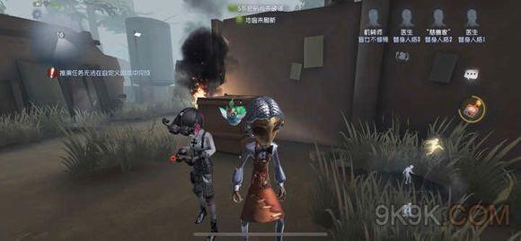

機械師

【人物介紹】
名字：特蕾西‧列茲尼克
特蕾西是一個機械師，她終日沉浸於自己那些“毫無用處”的小發明之中，並深深迷戀著火藥實驗。這些活動很快耗盡了父母留下的遺產，並讓她背上了巨額債務。來自歐利蒂絲莊園的邀請函雖承諾了豐厚的獎金，但真正吸引特蕾西的卻是莊園裡的秘密機關……
【能力介紹】
機械操縱： 隨身攜帶機械玩偶，在遭到傷害後就會損壞。機械師操控玩偶的消耗降低，倒地和坐上狂歡之椅時可加大消耗操控已放出的玩偶，被救援時中斷操控。
羸弱：身體羸弱，板窗交互速度降低30%。
機械大師：精通機械製造和機關陷阱，破譯速度增加35%，玩偶破譯速度增加25%；耳濡目染下，同伴破譯速度增加3%。
膽怯：同伴受傷或被放上狂歡之椅時，破譯和開門的速度降低45%，該效果可疊加。
初始道具為遙控器，可放出一個機器人(暱稱：阿吉)，機械師板窗交互速度極慢，非常容易被鬼擊中，逃生能力弱，但機械師破譯速度快，通常是隊伍中的破譯主力，當有兩人以上受傷時，主要依靠機器人破譯。
